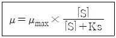
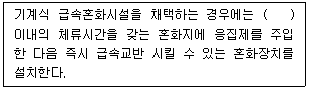
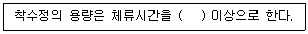
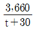
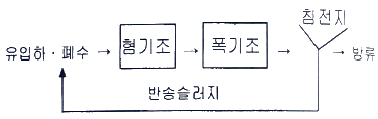
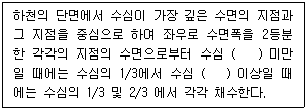
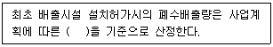
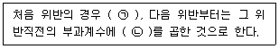

수질환경기사 (2020-09-26 기출문제)
1과목: 수질오염개론
1. 호수에 부하되는 인산량을 적용하여 대상 호수의 영양상태를 평가, 예측하는 모델 중 호수내의 인의 물질수지 관계식을 이용하여 평가하는 방법으로 가장 널리 이용되는 것은?
- Vollenweider model
- Streeter-Phelps model
- 2차원 POM
- ISC model
(정답률: 73%)

2. 우리나라의 수자원 이용현황 중 가장 많이 이용되어져 온 용수는?
- 공업용수
- 농업용수
- 생활용수
- 유지용수(하천)
(정답률: 86%)
3. 일차 반응에서 반응물질의 반감기가 5일이라고 한다면 물질의 90%가 소모되는데 소요되는 시간(일)은?
- 약 14
- 약 17
- 약 19
- 약 22
(정답률: 76%)
4. Fungi(균류, 곰팡이류)에 관한 설명으로 틀린 것은?
- 원시적 탄소동화작용을 통하여 유기물질을 섭취하는 독립영양계 생물이다.
- 폐수내의 질소와 용존산소가 부족한 경우에도 잘 성장하며 pH가 낮은 경우에도 잘 성장한다.
- 구성물질의 75 ~ 80%가 물이며 C10H17O6N을 화학구조식으로 사용한다.
- 폭이 약 5 ∼10 m 로서 현미경으로 쉽게 식별되며 슬러지팽화의 원인이 된다.
(정답률: 78%)
5. 하천수에서 난류확산에 의한 오염물질의 농도분포를 나타내는 난류확산방정식을 이용하기 위하여 일차적으로 고려해야 할 인자와 가장 관련이 적은 것은?
- 대상 오염물질의 침강속도(m/s)
- 대상 오염물질의 자기감쇠계수
- 유속(m/s)
- 하천수의 난류지수(Re. NO)
(정답률: 69%)
6. 직경이 0.1mm인 모관에서 10℃일 때 상승하는 물의 높이(cm)는? (단, 공기밀도 1.25× 10-3g/cm(10℃ 일 때), 접촉각 0°, h(상승높이) = 4σ/[gr(Y-Ya)], 표면장력이 74.2 dyne/cm)
- 30.3
- 42.5
- 51.7
- 63.9
(정답률: 46%)
7. 다음 수질을 가진 농업용수의 SAR값으로 판단할 때 Na＋가 흙에 미치는 영향은? (단, 수질농도 Na＋＝230 mg/L, Ca2＋＝ 60 mg/L, Mg2＋＝ 36 mg/L, PO43－＝1,500 mg/L, Cl－＝ 200 mg/L 이다. 원자량 = 나트륨 23, 칼슘 40, 마그네슘 24, 인 31)
- 영향이 적다.
- 영향이 중간정도이다.
- 영향이 비교적 높다.
- 영향이 매우 높다.
(정답률: 66%)
8. 확산의 기본법칙인 Fick's 제1법칙을 가장 알맞게 설명한 것은? (단, 확산에 의해 어떤 면적요소를 통과하는 물질의 이동속도 기준)
- 이동속도는 확산물질의 조성비에 비례한다.
- 이동속도는 확산물질의 농도경사에 비례한다.
- 이동속도는 확산물질의 분자확산계수와 반비례한다.
- 이동속도는 확산물질의 유입과 유출의 차이만큼 축적된다.
(정답률: 72%)
9. C2H6 15g이 완전 산화하는데 필요한 이론적 산소량(g)은?
- 약 46
- 약 56
- 약 66
- 약 76
(정답률: 78%)
10. 콜로이드 응집의 기본 메카니즘과 가장 거리가 먼 것은?
- 이중층 분산
- 전하의 중화
- 침전물에 의한 포착
- 입자간의 가교 형성
(정답률: 63%)
11. 탈산소계수가 0.15/day이면 BOD5와 BODu의 비 (BOD5/BODu)는? (단, 밑수는 상용대수이다.)
- 약 0.69
- 약 0.74
- 약 0.82
- 약 0.91
(정답률: 66%)
12. 회전원판공법(RBC)에서 원판면적의 약 몇 %가 폐수속에 잠겨서 운전하는 것이 가장 좋은가?
- 20
- 30
- 40
- 50
(정답률: 68%)
13. 미생물 세포의 비증식 속도를 나타내는 식에 대한 설명이 잘못된 것은?

- μmax는 최대 비증식속도로 시간－1 단위이다.
- Ks는 반속도상수로서 최대 성장률이 1/2일 때의 기질의 농도이다.
- μ = μmax인 경우, 반응속도가 기질농도에 비례하는 1차 반응을 의미한다.
- [S]는 제한기질 농도이고 단위는 mg/L이다.
(정답률: 78%)
14. 수질예측모형의 공간성에 따른 분류에 관한 설명으로 틀린 것은?
- 0차원 모형：식물성 플랑크톤의 계절적 변동사항에 주로 이용된다.
- 1차원 모형：하천이나 호수를 종방향 또는 횡방향의 연속교반 반응조로 가정한다.
- 2차원 모형：수질의 변동이 일방향성이 아닌 이방향성으로 분포하는 것으로 가정한다.
- 3차원 모형：대호수의 순환 패턴분석에 이용된다.
(정답률: 72%)
15. 화학합성균 중 독립영양균에 속하는 호기성균으로서 대표적인 황산화세균에 속하는 것은?
- Sphaerotilus
- Crenothrix
- Thiobacillus
- Leptothrix
(정답률: 72%)
16. 0.1 ppb Cd 용액 1L 중에 들어 있는 Cd의 양(g)은?
- 1 × 10－6
- 1 × 10－7
- 1 × 10－8
- 1 × 10－9
(정답률: 63%)
17. μ(세포 비증가율)가 μmax의 80 %일 때 기질농도(S80)와 μmax의 20 %일 때의 기질농도(S20)와의 (S80/S20)비는? (단, 배양기 내의 세포 비증가율은 Monod식이 적용)
- 4
- 8
- 16
- 32
(정답률: 62%)
18. 부영양화의 영향으로 틀린 것은?
- 부영양화가 진행되면 상품가치가 높은 어종들이 사라져 수산업의 수익성이 저하된다.
- 부영양화된 호수의 수질은 질소와 인 등 영양염류의 농도가 높으나 인의 과잉공급은 농작물의 이상성장을 초래하고 병충해에 대한 저항력을 약화시킨다.
- 부영양호의 pH는 중성 또는 약산성이나 여름에는 일시적으로 강산성을 나타내어 저니층의 용출을 유발한다.
- 조류로 인해 정수공정의 효율이 저하된다.
(정답률: 70%)
19. 산소포화농도가 9 mg/L인 하천에서 처음의 용존산소농도가 7 mg/L라면 3일간 흐른 후 하천 하류지점에서의 용존산소 농도(mg/L)는? (단, BODu ＝10 mg/L, 탈산소계수 = 0.1 day－1, 재폭기계수 = 0.2 day－1, 상용대수기준)
- 4.5
- 5.0
- 5.5
- 6.0
(정답률: 48%)
20. 바다에서 발생되는 적조현상에 관한 설명과 가장 거리가 먼 것은?
- 적조 조류의 독소에 의한 어패류의 피해가 발생한다.
- 해수 중 용존산소의 결핍에 의한 어패류의 피해가 발생한다.
- 갈수기 해수 내 염소량이 높아질 때 발생된다.
- 플랑크톤의 번식에 충분한 광량과 영양염류가 공급될 때 발생된다.
(정답률: 79%)
2과목: 상하수도계획
21. 자연부식 중 매크로셀 부식에 해당되는 것은?
- 산소농담(통기차)
- 특수토양부식
- 간섭
- 박테리아부식
(정답률: 67%)
22. 복류수를 취수하는 집수매거의 유출단에서 매거 내의 평균유속 기준은?
- 0.3 m/sec 이하
- 0.5 m/sec 이하
- 0.8 m/sec 이하
- 1.0 m/sec 이하
(정답률: 59%)
23. 상수시설의 급수설비 중 급수관 접속 시 설계기준과 관련한 고려사항(위험한 접속)으로 옳지 않은 것은?
- 급수관은 수도사업자가 관리하는 수도관 이외의 수도관이나 기타 오염의 원인으로 될 수 있는 관과 직접 연결해서는 안 된다.
- 급수관을 방화수조, 수영장 등 오염의 원인이 될 우려가 있는 시설과 연결하는 경우에는 급수관의 토출구를 만수면보다 25 mm 이상의 높이에 설치해야 한다.
- 대변기용 세척밸브는 유효한 진공파괴설비를 설치한 세척밸브나 대변기를 사용하는 경우를 제외하고는 급수관에 직결해서는 안 된다.
- 저수조를 만들 경우에 급수관의 토출구는 수조의 만수면에서 급수관경 이상의 높이에 만들어야 한다. 다만, 관경이 50 mm 이하의 경우는 그 높이를 최소 50 mm로 한다.
(정답률: 57%)
24. 펌프의 비교회전도에 관한 설명으로 옳은 것은?
- 비교회전도가 크게 될수록 흡입성능이 나쁘고 공동현상이 발생하기 쉽다.
- 비교회전도가 크게 될수록 흡입성능은 나쁘나 공동현상이 발생하기 어렵다.
- 비교회전도가 크게 될수록 흡입성능은 좋고 공동현상이 발생하기 어렵다.
- 비교회전도가 크게 될수록 흡입성능은 좋으나 공동현상이 발생하기 쉽다.
(정답률: 70%)
25. 수평부설한 직경 300mm, 길이 3,000 m의 주철관에 8,640m3/day로 송수 시 관로 끝에서의 손실수두(m)는? (단, 마찰계수 f = 0.03, g = 9.8m/sec2, 마찰손실만 고려)
- 약 10.8
- 약 15.3
- 약 21.6
- 약 30.6
(정답률: 39%)
26. 하천수를 수원으로 하는 경우, 취수시설인 취수문에 대한 설명으로 틀린 것은?(오류 신고가 접수된 문제입니다. 반드시 정답과 해설을 확인하시기 바랍니다.)
- 취수지점은 일반적으로 상류부의 소하천에 사용하고 있다.
- 하상변동이 작은 지점에서 취수할 수 있어 복단면의 하천 취수에 유리하다.
- 시공조건에서 일반적으로 가물막이를 하고 임시하도 설치 등을 고려해야 한다.
- 기상조건에서 파랑에 대하여 특히 고려할 필요는 없다.
(정답률: 47%)
27. 정수시설인 배수관의 수압에 관한 내용으로 옳은 것은?
- 급수관을 분기하는 지점에서 배수관내의 최대정수압은 150 kPa(약 1.6 kgf/cm2)를 초과하지 않아야 한다.
- 급수관을 분기하는 지점에서 배수관내의 최대정수압은 250 kPa(약 2.6 kgf/cm2)를 초과하지 않아야 한다.
- 급수관을 분기하는 지점에서 배수관내의 최대정수압은 450kPa(약 4.6 kgf/cm2)를 초과하지 않아야 한다.
- 급수관을 분기하는 지점에서 배수관내의 최대정수압은 700 kPa(약 7.1 kgf/cm2)를 초과하지 않아야 한다.
(정답률: 71%)
28. 화학적 처리를 위한 응집시설 중 급속혼화시설에 관한 설명으로 ( )에 옳은 내용은?

- 30초
- 1분
- 3분
- 5분
(정답률: 57%)
29. 상수도 시설 중 침사지에 관한 설명으로 틀린 것은?
- 위치는 가능한 한 취수구에 근접하여 제내지에 설치한다.
- 지의 유효수심은 2 ∼ 3 m를 표준으로 한다.
- 지의 상단높이는 고수위보다 0.6∼1m의 여유고를 둔다.
- 지내평균유속은 2~7 cm/sec를 표준으로 한다.
(정답률: 67%)
30. 해수담수화시설 중 역삼투설비에 관한 설명으로 옳지 않은 것은?
- 해수담수화시설에서 생산된 물은 pH나 경도가 낮기 때문에 필요에 따라 적절한 약품을 주입하거나 다른 육지의 물과 혼합하여 수질을 조정한다.
- 막모듈은 플러싱과 약품세척 등을 조합하여 세척한다.
- 고압펌프를 정지할 때에는 드로백이 유지되도록 체크 밸브를 설치하여야 한다.
- 고압펌프는 효율과 내식성이 좋은 기종으로 하며 그 형식은 시설규모 등에 따라 선정한다.
(정답률: 64%)
31. 계획취수량은 계획 1일 최대급수량의 몇 % 정도의 여유를 두고 정하는가?
- 5%
- 10%
- 15%
- 20%
(정답률: 63%)
32. 관경 1,100 mm, 역사이펀 관거 내의 동수경사 2.4‰, 유속 2.15 m/sec, 역사이펀 관거의 길이 76m일 때, 역사이펀의 손실수두(m)는? (단, β = 1.5, a = 0.⑤. m이다.)
- 0.29 m
- 0.39 m
- 0.49 m
- 0.59 m
(정답률: 43%)
33. 하수도 계획의 목표연도는 원칙적으로 몇 년 정도로 하는가?
- 10년
- 15년
- 20년
- 25년
(정답률: 71%)
34. 원형 원심력 철근콘크리트관에 만수된 상태로 송수된다고 할 때 Manning 공식에 의한 유속(m/sec)은? (단, 조도계수 = 0.013, 동수경사 = 0.002, 관지름 = 250mm)
- 0.24
- 0.54
- 0.72
- 1.03
(정답률: 55%)
35. 상수도 취수보의 취수구에 관한 설명으로 틀린 것은?
- 높이는 배사문의 바닥높이보다 0.5~1m이상 낮게 한다.
- 유입속도는 0.4~0.8m/sec를 표준으로 한다.
- 제수문의 전면에는 스크린을 설치한다.
- 계획취수위는 취수구로부터 도수기점까지의 손실수두를 계산하여 결정한다.
(정답률: 53%)
36. 상수시설에서 급수관을 배관하고자 할 경우의 고려사항으로 옳지 않은 것은?
- 급수관을 공공도로에 부설할 경우에는 다른 매설물과 의 간격을 30 cm 이상 확보한다.
- 수요가의 대지 내에서 가능한 한 직선배관이 되도록 한다.
- 가급적 건물이나 콘크리트의 기초 아래를 횡단하여 배관하도록 한다.
- 급수관이 개거를 횡단하는 경우에는 가능한 한 개거의 아래로 부설한다.
(정답률: 69%)
37. 합류식에서 우천 시 계획오수량은 원칙적으로 계획시간 최대오수량의 몇 배 이상으로 고려하여야 하는가?
- 1.5배
- 2.0배
- 2.5배
- 3.0배
(정답률: 69%)
38. 상수도시설인 착수정에 관한 설명으로 ( )에 옳은 것은?

- 0.5분
- 1.0분
- 1.5분
- 3.0분
(정답률: 63%)
39. 하수관거시설이 황화수소에 의하여 부식되는 것을 방지하기 위한 대책으로 틀린 것은?
- 관거를 청소하고 미생물의 생식 장소를 제거한다.
- 염화제2철을 주입하여 황화물을 고정화한다.
- 염소를 주입하여 ORP를 저하시킨다.
- 환기에 의해 관내 황화수소를 희석한다.
(정답률: 52%)
40. 유역면적이 2 km2인 지역에서의 우수 유출량을 산정하기 위하여 합리식을 사용하였다. 다음 조건일 때 관거 길이 1,000 m인 하수관의 우수유출량(m3/sec)은? (단, 강우농도 I(mm/hr) =

, 유입시간 6분, 유출계수 0.7, 관내의 평균 유속 1.5 m/sec)- 약 25
- 약 30
- 약 35
- 약 40
(정답률: 57%)
3과목: 수질오염방지기술
41. 응집에 관한 설명으로 옳지 않은 것은?
- 황산알루미늄을 응집제로 사용할 때 수산화물 플록을 만들기 위해서는 황산알루미늄과 반응할 수 있도록 물에 충분한 알칼리도가 있어야 한다.
- 응집제로 황산알루미늄은 대개 철염에 비해 가격이 저렴한 편이다.
- 응집제로 황산알루미늄은 철염보다 넓은 pH 범위에서 적용이 가능하다.
- 응집제로 황산알루미늄을 사용하는 경우, 적당한 pH 범위는 대략 4.5에서 8이다.
(정답률: 56%)
42. 1차 침전지의 유입 유량은 1,000 m3/day이고 SS 농도는 350 mg/L이다. 1차 침전지에서 SS제거효율이 60 %일 때 하루에 1차 침전지에서 발생되는 슬러지 부피(m3)는? (단, 슬러지의 비중 = 1.⑤, 함수율 = 94 %, 기타 조건은 고려하지 않음)
- 2.3
- 2.5
- 2.7
- 3.3
(정답률: 40%)
43. 도시 폐수의 침전시간에 따라 변화하는 수질인자의 종류와 거리가 가장 먼 것은?
- 침전성 부유물
- 총부유물
- BOD5
- SVI 변화
(정답률: 53%)
44. 무기물이 0.30 g/g VSS로 구성된 생물성 VSS를 나타내는 폐수의 경우, 혼합액 중의 TSS와 VSS 농도가 각각 2,000mg/L, 1,480 mg/L라 하면 유입수로부터 기인된 불활성 고형물에 대한 혼합액 중의 농도(mg/L)는? (단, 유입된 불활성 부유 고형물질의 용해는 전혀 없다고 가정)
- 76
- 86
- 96
- 116
(정답률: 37%)
45. 부피가 4,000 m3인 포기조의 MLSS 농도가 2,000mg/L, 반송슬러지의 SS농도가 8,000 mg/L, 슬러지 체류시간(SRT)이 5일 이면 폐슬러지의 유량(m3/day)은? (단, 2차침전지 유출수 중의 SS를 무시한다.)
- 125
- 150
- 175
- 200
(정답률: 44%)
46. 폐수 내 시안화합물 처리방법인 알칼리염소법에 관한 설명과 가장 거리가 먼 것은?
- CN의 분해를 위해 유지되는 pH는 10이상이다.
- 니켈과 철의 시안착염이 혼입된 경우 분해가 잘 되지 않는다.
- 산화제의 투입량이 과잉인 경우에는 염화시안이 발생되므로 산화제는 약간 부족하게 주입한다.
- 염소처리 시 강알칼리성 상태에서 1단계로 염소를 주입하여 시안화합물을 시안산화물로 변환시킨 후 중화하고 2단계로 염소를 재주입하여 N2와 CO2로 분해시킨다.
(정답률: 54%)
47. 생물학적 3차 처리를 위한 A/O 공정을 나타낸 것으로 각 반응조 역할을 가장 적절하게 설명한 것은?

- 혐기조에서는 유기물 제거와 인의 방출이 일어나고, 폭기조에서는 인의 과잉섭취가 일어난다.
- 폭기조에서는 유기물 제거가 일어나고, 혐기조에서는 질산화 및 탈질이 동시에 일어난다.
- 제거율을 높이기 위해서는 외부탄소원인 메탄올 등을 폭기조에 주입한다.
- 혐기조에서는 인의 과잉섭취가 일어나며, 폭기조에서는 질산화가 일어난다.
(정답률: 64%)
48. 정수장 응집 공정에 사용되는 화학 약품 중 나머지 셋과 그 용도가 다른 하나는?
- 오존
- 명반
- 폴리비닐아민
- 황산제일철
(정답률: 64%)
49. 수량 36,000m3/day의 하수를 폭 15m, 길이 30m, 깊이 2.5m의 침전지에서 표면적 부하 40m3/m2･day의 조건으로 처리하기 위한 침전지 수(개)는? (단, 병렬기준)
- 2
- 3
- 4
- 5
(정답률: 56%)
50. 생물학적 질소 및 인 동시제거공정으로서 혐기조, 무산소조, 호기조로 구성되며, 혐기조에서 인 방출, 무산소조에서 탈질화, 호기조에서 질산화 및 인 섭취가 일어나는 공정은?
- A2/O 공정
- Phostrip 공정
- Modified Bardenpho 공정
- Modified UCT 공정
(정답률: 69%)
51. 공단 내에 새 공장을 건립할 계획이 있다. 공단 폐수처리장은 현재 876L/s의 폐수를 처리하고 있다. 공단 폐수처리장에서 Phenol을 제거할 조치를 강구치 않는다면 폐수처리장의 방류수내 Phenol의 농도(mg/L)는? (단, 새 공장에서 배출 될 Phenol의 농도는 10g/m3 이고 유량은 87.6L/s 이며 새공장 외에는 Phenol 배출 공장이 없다.)
- 0.51
- 0.71
- 0.91
- 1.11
(정답률: 41%)
52. Chick's law에 의하면 염소소독에 의한 미생물 사멸율은 1차 반응에 따른다. 미생물의 80%가 0.1mg/L 잔류 염소로 2분 내에 사멸된다면 99.9%를 사멸시키기 위해서 요구되는 접촉시간(분)은?
- 5.7
- 8.6
- 12.7
- 14.2
(정답률: 48%)
53. 질산화 박테리아에 대한 설명으로 옳지 않은 것은?
- 절대호기성이어서 높은 산소농도를 요구한다.
- Nitrobacter는 암모늄이온의 존재 하에서 pH 9.5. 이상이면 생장이 억제된다.
- 질산화 반응의 최적온도는 25℃이며 20℃이하, 40℃이상에서는 활성이 없다.
- Nitrosomonas는 알칼리성 상태에서는 활성이 크지만 pH 6.0이하에서는 생장이 억제된다.
(정답률: 51%)
54. 활성슬러지 공정 중 핀플럭이 주로 많이 발생하는 공정은?
- 심층폭기법
- 장기폭기법
- 점감식폭기법
- 계단식폭기법
(정답률: 56%)
55. 고농도의 액상 PCB 처리방법으로 가장 거리가 먼 것은?
- 방사선조사(코발트 60에 의한 γ선 조사)
- 연소법
- 자외선조사법
- 고온 고압 알칼리 분해법
(정답률: 58%)
56. 살수여상 상단에서 연못화(ponding)가 일어나는 원인으로 가장 거리가 먼 것은?
- 여재가 너무 작을 때
- 여재가 견고하지 못하고 부서질 때
- 탈락된 생물막이 공극을 폐쇄할 때
- BOD 부하가 낮을 때
(정답률: 57%)
57. CFSTR에서 물질을 분해하여 효율 95%로 처리하고자 한다. 이 물질은 0.5차 반응으로 분해되며, 속도상수는 0.⑤(mg/L)1/2/hr이다. 유량은 500 L/hr이고 유입농도는 250mg/L로 일정하다면 CFSTR의 필요부피(m3)는? (단, 정상상태 가정)
- 약 520
- 약 570
- 약 620
- 약 672
(정답률: 35%)
58. 회전생물막접촉기(RBC)에 관한 설명으로 틀린 것은?
- 재순환이 필요 없고 유지비가 적게 든다.
- 메디아는 전형적으로 약 40%가 물에 잠긴다.
- 운영변수가 적어 모델링이 간단하고 편리하다.
- 설비는 경량재료로 만든 원판으로 구성되며 1~2 rpm의 속도로 회전한다.
(정답률: 51%)
59. 1차 처리된 분뇨의 2차 처리를 위해 폭기조, 2차 침전지로 구성된 활성슬러지 공정을 운영하고 있다. 운영조건이 다음과 같을 때 폭기조 내의 고형물 체류시간(SRT, day)은? (단, 유입유량 1,000 m3/day, 폭기조 수리학적 체류시간 = 6시간, MLSS 농도 = 3,000 mg/L, 잉여슬러지 배출량 = 30m3/day, 잉여슬러지 SS농도 = 10,000mg/L, 2차 침전지 유출수 SS농도 = 5 mg/L)
- 약 2
- 약 2.5
- 약 3
- 약 3.5
(정답률: 47%)
60. 생물학적 인 제거를 위한 A/O 공정에 관한 설명으로 옳지 않은 것은?
- 폐슬러지 내의 인의 함량이 비교적 높고 비료의 가치가 있다.
- 비교적 수리학적 체류시간이 짧다.
- 낮은 BOD/P 비가 요구된다.
- 추운 기후의 운전조건에서 성능이 불확실하다.
(정답률: 55%)
4과목: 수질오염공정시험기준
61. 물벼룩을 이용한 급성 독성시험법에서 사용하는 용어의 정의로 틀린 것은?
- 치사：일정 비율로 준비된 시료에 물벼룩을 투입하고 24시간 경과 후 시험용기를 살며시 움직여주고, 15초 후 관찰했을 때 아무 반응이 없는 경우를 '치사'라 판정한다.
- 유영저해：독성물질에 의해 영향을 받아 일부 기관(촉각, 후복부 등)이 움직임이 없을 경우를 '유영저해'로 판정한다.
- 반수영향농도：투입 시험생물의 50%가 치사 혹은 유영저해를 나타낸 농도이다.
- 지수식 시험방법：시험기간 중 시험용액을 교환하여 농도를 지수적으로 계산하는 시험을 말한다.
(정답률: 55%)
62. 시료량 50mL를 취하여 막여과법으로 총대장균군수를 측정하려고 배양을 한 결과, 50개의 집락수가 생성되었을 때 총 대장균군수/100mL는?
- 10
- 100
- 1,000
- 10,000
(정답률: 57%)
63. 폐수의 부유물질(SS)을 측정하였더니 1,312mg/L이었다. 시료 여과 전 유리섬유여지의 무게가 1.2113g이고, 이 때 사용된 시료량이 100mL이었다면 시료 여과 후 건조시킨 유리섬유여지의 무게(g)는?
- 1.2242
- 1.3425
- 2.5233
- 3.5233
(정답률: 48%)
64. 흡광도 측정에서 투과율이 30%일 때 흡광도는?
- 0.37
- 0.42
- 0.52
- 0.63
(정답률: 56%)
65. BOD 측정용 시료를 희석할 때 식종 희석수를 사용하지 않아도 되는 시료는?
- 잔류염소를 함유한 폐수
- pH 4. 이하 산성으로 된 폐수
- 화학공장 폐수
- 유기물질이 많은 가정 하수
(정답률: 52%)
66. 예상 BOD치에 대한 사전 경험이 없을 때, 희석하여 시료를 조제하는 기준으로 알맞은 것은?
- 오염도가 심한 공장폐수：0.01 ∼ 0.⑤ %
- 오염된 하천수：10 ∼ 20 %
- 처리하여 방류된 공장폐수：50 ∼ 75 %
- 처리하지 않은 공장폐수：1 ∼ 5 %
(정답률: 60%)
67. 하천수의 시료 채취 지점에 관한 내용으로 ( )에 공통으로 들어갈 내용은?

- 2 m
- 3 m
- 5 m
- 6 m
(정답률: 61%)
68. 2 N와 7 N HCl 용액을 혼합하여 5 N-HCl 1L를 만들고자 한다. 각각 몇 mL씩을 혼합해야 하는가?
- 2 N-HCl 400 mL와 7 N-HCl 600 mL
- 2 N-HCl 500 mL와 7 N-HCl 400 mL
- 2 N-HCl 300 mL와 7 N-HCl 700 mL
- 2 N-HCl 700 mL와 7 N-HCl 300 mL
(정답률: 51%)
69. 데발다 합금 환원 증류법으로 질산성 질소를 측정하는 원리의 설명으로 틀린 것은?
- 데발다 합금으로 질산성 질소를 암모니아성 질소로 환원한다.
- 지표수, 지하수, 폐수 등에 적용할 수 있으며, 정량한계는 중화적정법은 0.1mg/L, 흡광도법은 0.5mg/L이다.
- 아질산성질소는 설퍼민산으로 분해 제거한다.
- 암모니아성질소 및 일부 분해되기 쉬운 유기질소는 알칼리성에서 증류 제거한다.
(정답률: 46%)
70. 분원성 대장균군(막여과법) 분석 시험에 관한 내용으로 틀린 것은?
- 분원성대장균군이란 온혈동물의 배설물에서 발견되는 그람음성·무아포성의 간균이다.
- 물속에 존재하는 분원성대장균군을 측정하기 위하여 페트리접시에 배지를 올려놓은 다음 배양 후 여러 가지 색조를 띠는 청색의 집락을 계수하는 방법이다.
- 배양기 및 항온수조는 배양온도를 (25±0.5)℃로 유지할수 있는 것을 사용한다.
- 시험결과는 '분원성 대장균군수/100 mL' 로 표기한다.
(정답률: 60%)
71. 석유계 총탄화수소 용매추출/기체크로마토그래프에 대한 설명으로 틀린 것은?
- 컬럼은 안지름 0.20~0.35mm, 필름두께 0.1~3.0 μm, 길이 15~60m의 DB-1, DB-5. 및 DB-624. 등의 모세관이나 동등한 분리성능을 가진 모세관으로 대상 분석 물질의 분리가 양호한 것을 택하여 시험한다.
- 운반기체는 순도 99.999 %이상의 헬륨으로서(또는 질소) 유량은 0.5~5mL/min로 한다.
- 검출기는 불꽃광도검출기(FPD)를 사용한다.
- 시료 주입부 온도는 280~320℃, 컬럼온도는 40~320℃로 사용한다.
(정답률: 47%)
72. 카드뮴을 자외선/가시선 분광법으로 측정할 때 사용되는 시약으로 가장 거리가 먼 것은?
- 수산화나트륨용액
- 요오드화칼륨용액
- 시안화칼륨용액
- 타타르산용액
(정답률: 49%)
73. 연속흐름법으로 시안 측정시 사용되는 흐름주입분석기에 관한 설명으로 옳지 않은 것은?
- 연속흐름분석기의 일종이다.
- 다수의 시료를 연속적으로 자동분석하기 위하여 사용된다.
- 기본적인 본체의 구성은 분할흐름 분석기와 같으나 용액의 흐름 사이에 공기방울을 주입하지 않는 것이 차이점이다.
- 시료의 연속흐름에 따라 상호 오염을 미연에 방지할 수 있다.
(정답률: 43%)
74. 감응계수를 옳게 나타낸 것은? (단, 검정곡선 작성용 표준용액의 농도＝C, 반응값＝R)
- 감응계수＝R / C
- 감응계수＝C / R
- 감응계수＝R × C
- 감응계수＝C － R
(정답률: 61%)
75. 수질오염물질을 측정함에 있어 측정의 정확성과 통일성을 유지하기 위한 제반사항에 관한 설명으로 틀린 것은?
- 시험에 사용하는 시약은 따로 규정이 없는 한 1급 이상 또는 이와 동등한 규격의 시약을 사용한다.
- “항량으로 될 때까지 건조한다”라는 의미는 같은 조건에서 1시간 더 건조할 때 전후 무게의 차가 g당 0.3. mg 이하일 때를 말한다.
- 기체 중의 농도는 표준상태(0℃, 1기압)로 환산 표시한다.
- “정확히 취하여”라 하는 것은 규정한 양의 시료를 부피피펫으로 0.1mL까지 취하는 것을 말한다.
(정답률: 59%)
76. 유도결합플라스마 원자발광분광법으로 금속류를 측정할 때 간섭에 관한 내용으로 옳지 않은 것은?
- 물리적 간섭 : 시료 도입부의 분무과정에서 시료의 비중, 점성도, 표면장력의 차이에 의해 발생한다.
- 분광 간섭 : 측정원소의 방출선에 대해 플라스마의 기체성분이나 공존 물질에서 유래하는 분광학적 요인에 의해 원래의 방출선의 세기 변동 및 다른 원자 혹은 이온의 방출선과의 겹침 현상이 발생할 수 있다.
- 이온화 간섭 : 이온화 에너지가 큰 나트륨 또는 칼륨 등 알칼리 금속이 공존원소로 시료에 존재 시 플라스마의 전자밀도를 감소시킨다.
- 물리적 간섭 : 시료의 종류에 따라 분무기의 종류를 바꾸거나, 시료의 희석, 매질 일치법, 내부표준법, 농축분리법을 사용하여 간섭을 최소화한다.
(정답률: 52%)
77. 다음 중 관내의 유량 측정 방법이 아닌 것은?
- 오리피스
- 자기식 유량측정기
- 피토우(pitot)관
- 위어(Weir)
(정답률: 57%)
78. 측정항목 중 H2SO4를 이용하여 pH를 2 이하로 한 후 4℃에서 보존하는 것이 아닌 것은?
- 화학적 산소요구량
- 질산성 질소
- 암모니아성 질소
- 총질소
(정답률: 50%)
79. 수질오염공정시험기준에서 시료보존 방법이 지정되어 있지 않은 측정항목은?
- 용존산소(윙클리법)
- 불소
- 색도
- 부유물질
(정답률: 54%)
80. 금속류-불꽃 원자흡수분광광도법에서 일어나는 간섭 중 광학적 간섭에 관한 설명으로 맞는 것은?
- 표준용액과 시료 또는 시료와 시료 간의 물리적 성질(점도, 밀도, 표면장력 등)의 차이 또는 표준물질과 시료의 매질(matrix) 차이에 의해 발생한다.
- 불꽃온도가 너무 높을 경우 중성원자에서 전자를 빼앗아 이온이 생성될 수 있으며 이 경우 음(－)의 오차가 발생하게 된다.
- 분석하고자 하는 원소의 흡수파장과 비슷한 다른 원소의 파장이 서로 겹쳐 비이상적으로 높게 측정되는 경우이다.
- 불꽃의 온도가 분자를 들뜬 상태로 만들기에 충분히 높지 않아서, 해당 파장을 흡수하지 못하여 발생한다.
(정답률: 46%)
5과목: 수질환경관계법규
81. 초과부과금을 산정할 때 1kg당 부과 금액이 가장 높은 수질오염물질은?
- 크롬 및 그 화합물
- 카드뮴 및 그 화합물
- 구리 및 그 화합물
- 시안화합물
(정답률: 47%)
82. 환경부령으로 정하는 폐수무방류배출시설의 설치가 가능한 특정수질유해물질이 아닌 것은?
- 디클로로메탄
- 구리 및 그 화합물
- 카드뮴 및 그 화합물
- 1,1－디클로로에틸렌
(정답률: 40%)
83. 사업장의 규모별 구분에 관한 내용으로 ( )에 맞는 내용은?

- 예상용수사용량
- 예상폐수배출량
- 예상하수배출량
- 예상희석수사용량
(정답률: 53%)
84. 비점오염저감시설의 관리·운영기준으로 옳지 않은 것은? (단, 자연형 시설)
- 인공습지 : 동절기(11월부터 다음 해 3월까지를 말한다)에는 인공습지에서 말라 죽은 식생을 제거·처리하여야 한다.
- 인공습지 : 식생대가 50퍼센트 이상 고사하는 경우에는 추가로 수생식물을 심어야 한다.
- 식생형 시설 : 식생수로 바닥의 퇴적물이 처리용량의 25퍼센트를 초과하는 경우에는 침전된 토사를 제거하여야 한다.
- 식생형 시설 전처리를 위한 침사지는 주기적으로 협잡물과 침전물을 제거하여야 한다.
(정답률: 34%)
85. 비점오염원 관리지역의 지정기준이 옳은 것은?
- 하천 및 호소의 수생태계에 관한 환경기준에 미달하는 유역으로 유달부하량 중 비점오염원이 50% 이하인 지역
- 관광지구 지정으로 비점오염원 관리가 필요한 지역
- 인구 50만명 이상인 도시로서 비점오염원 관리가 필요한 지역
- 지질이나 지층 구조가 특이하여 특별한 관리가 필요하다고 인정되는 지역
(정답률: 46%)
86. 환경부장관이 폐수처리업자에게 등록을 취소하거나 6개월 이내의 기간을 정하여 영업정지를 명할 수 있는 경우에 대한 기준으로 틀린 것은?
- 고의 또는 중대한 과실로 폐수처리영업을 부실하게 한 경우
- 영업정지처분 기간에 영업행위를 한 경우
- 1년에 2회 이상 영업정지처분을 받은 경우
- 등록 후 1년 이상 계속하여 영업실적이 없는 경우
(정답률: 56%)
87. 비점오염저감시설의 설치기준에서 자연형 시설 중 인공습지의 설치기준으로 틀린 것은?
- 습지에는 물이 연중 항상 있을 수 있도록 유량공급대책을 마련하여야 한다.
- 인공습지의 유입구에서 유출구까지의 유로는 최대한 길게 하고, 길이 대 폭의 비율은 2：1이상으로 한다.
- 유입부에서 유출부까지의 경사는 1.0∼5.0 %를 초과하지 아니하도록 한다.
- 생물의 서식 공간을 창출하기 위하여 5종부터 7종까지의 다양한 식물을 심어 생물다양성을 증가시킨다.
(정답률: 46%)
88. 최종방류구에 방류하기 전에 배출시설에서 배출하는 폐수를 재이용하는 사업자에게 부과되는 배출부과금 감면률이 틀린 것은?
- 재이용률이 10% 이상 30% 미만인 경우: 100분의 20
- 재이용률이 30% 이상 60% 미만인 경우: 100분의 50
- 재이용률이 60% 이상 90% 미만인 경우: 100분의 70
- 재이용률이 90% 이상인 경우: 100분의 90
(정답률: 45%)
89. 비점오염원의 설치신고 또는 변경신고를 할 때 제출하는 비점오염 저감계획서에 포함되어야 하는 사항으로 가장 거리가 먼 것은?
- 비점오염원 관련 현황
- 비점오염저감시설 설치 계획
- 비점오염원 관리 및 모니터링 방안
- 비점오염원 저감방안
(정답률: 47%)
90. 다음 위반행위에 따른 벌칙기준 중 1년 이하의 징역 또는 1천만원 이하의 벌금에 처하는 경우는?
- 허가를 받지 아니하고 폐수배출시설을 설치한 자
- 폐수무방류배출시설에서 배출되는 폐수를 오수 또는 다른 배출시설에서 배출되는 폐수와 혼합하여 처리하는 행위를 한 자
- 환경부장관에게 신고하지 아니하고 기타 수질오염원을 설치한 자
- 배출시설의 설치를 제한하는 지역에서 배출시설을 설치한 자
(정답률: 34%)
91. 오염총량관리기본방침에 포함되어야 하는 사항으로 틀린 것은?
- 오염총량관리의 목표
- 오염총량관리의 대상 수질오염물질 종류
- 오염원의 조사 및 오염부하량 산정방법
- 오염총량관리 현황
(정답률: 39%)
92. 기타 수질오염원의 시설구분으로 틀린 것은?
- 수산물 양식시설
- 농축수산물 단순가공시설
- 금속 도금 및 세공시설
- 운수장비 정비 또는 폐차장 시설
(정답률: 45%)
93. 공공폐수처리시설의 설치 부담금의 부과·징수와 관련한 설명으로 틀린 것은?
- 공공폐수처리시설을 설치ㆍ운영하는 자는 그 시설의 설치에 드는 비용의 전부 또는 일부에 충당하기 위하여 원인자로부터 공공폐수처리시설의 설치 부담금을 부과ㆍ징수할 수 있다.
- 공공폐수처리시설 설치 부담금의 총액은 시행자가 해당시설의 설치와 관련하여 지출하는 금액을 초과하여서는 아니 된다.
- 원인자에게 부과되는 공공폐수처리시설 설치 부담금은 각 원인자의 사업의 종류ㆍ규모 및 오염물질의 배출 정도 등을 기준으로 하여 정한다.
- 국가와 지방자치단체는 세제상 또는 금융상 필요한 지원조치를 할 수 없다.
(정답률: 41%)
94. 1일 800 m3의 폐수가 배출되는 사업장의 환경기술인의 자격에 관한 기준은?
- 수질환경기사 1명 이상
- 수질환경산업기사 1명 이상
- 환경기능사 1명 이상
- 2년 이상 수질분야 환경관련 업무에 직접 종사한 자 1명 이상
(정답률: 59%)
95. 초과배출부과금 산정 시 적용되는 기준이 아닌 것은?
- 기준초과배출량
- 수질오염물질 1킬로그램당의 부과금액
- 지역별 부과계수
- 사업장의 연간 매출액
(정답률: 58%)
96. 폐수종말처리시설의 방류수 수질기준으로 틀린 것은? (단, Ⅰ지역, 2020년 1월 1일 이후 기준, ( )는 농공단지 폐수종말처리시설의 방류수 수질기준임)
- BOD : 10(10)mg/L 이하
- COD : 20(30)mg/L 이하
- 총질소(T-N) : 20(20)mg/L 이하
- 생태독성(TU) : 1(1)mg/L 이하
(정답률: 45%)
97. 폐수배출시설 외에 수질오염물질을 배출하는 시설 또는 장소로서 환경부령이 정하는 것(기타수질오염원)의 대상 시설과 규모기준에 관한 내용으로 틀린 것은?
- 자동차폐차장시설：면적 1,000 m2 이상
- 수조식양식어업시설：수조면적 합계 500m2 이상
- 골프장：면적 3만m2 이상
- 무인자동식 현상, 인화, 정착시설：1대 이상
(정답률: 51%)
98. 초과부과금 산정 시 적용되는 위반횟수별 부과계수에 관한 내용으로 ( )에 맞는 것은? (단, 폐수무방류배출시설의 경우)

- ㉠ 1.5, ㉡ 1.3
- ㉠ 1.5, ㉡ 1.5
- ㉠ 1.8, ㉡ 1.3
- ㉠ 1.8, ㉡ 1.5
(정답률: 52%)
99. 방지시설설치의 면제기준에 관한 설명으로 틀린 것은?
- 수질오염물질이 항상 배출허용기준 이하로 배출되는 경우
- 새로운 수질오염물질이 발생되어 배출시설 또는 방지시설의 개선이 필요한 경우
- 폐수를 전량 위탁처리하는 경우
- 폐수를 전량 재이용하는 등 방지시설을 설치하지 아니하고도 수질오염물질을 적정하게 처리할 수 있는 경우
(정답률: 54%)
100. 휴경 등 권고대상 농경지의 해발고도 및 경사도는?
- 해발고도：해발 200미터, 경사도：10%
- 해발고도：해발 400미터, 경사도：15%
- 해발고도：해발 600미터, 경사도：20%
- 해발고도：해발 800미터, 경사도：25%
(정답률: 57%)